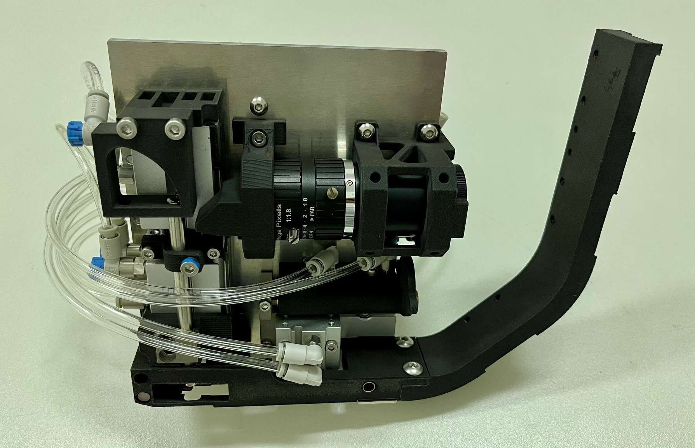
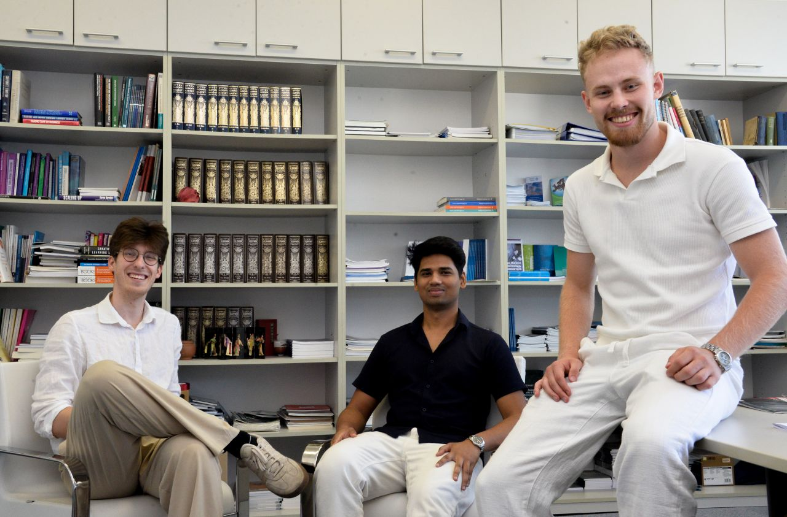
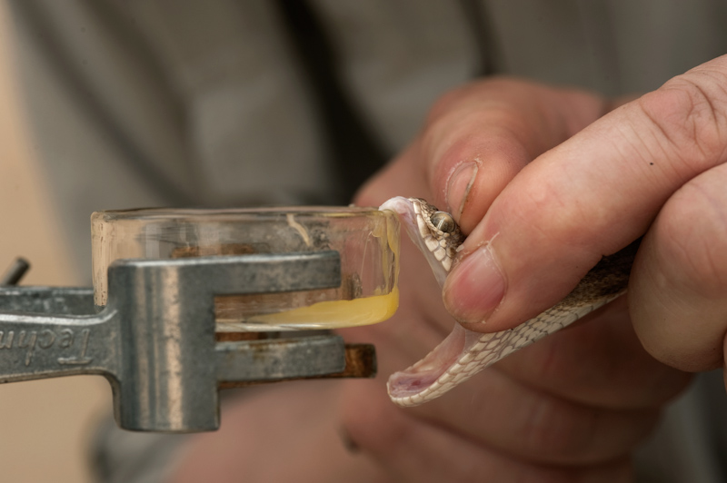

Technologické aplikace
PSP Technologies
Plasma Shock Peening · PSP SPACE
Povrchové úpravy kovů pro kosmické aplikace

PSP Technologies rozvíjí technologii Plasma Shock Peening pro vyšší odolnost kovových součástí. V projektu PSP SPACE jsme podpořili její adaptaci pro kosmické aplikace – od robotizace zařízení a materiálových zkoušek po přípravu spolupráce s kosmickým průmyslem.
Podpora v rámci ESA Technology Broker
Zjisti víc
Pozemní technologie v nové doméně
Plasma Shock Peening využívá rázovou vlnu ke vnesení tlakových zbytkových napětí do povrchové vrstvy kovu. Projekt PSP SPACE se zaměřil na přenos tohoto postupu do kosmických aplikací s cílem zvýšit odolnost součástí a otevřít možnosti odlehčení konstrukcí.
Adaptace a ověřování
Podpora ESA Technology Broker pomohla rozpracovat cestu od pozemní technologie k požadavkům kosmického průmyslu. Projekt přinesl funkční prototyp pro integraci s robotickým ramenem, úpravy řízení i optického polohování a materiálové zkoušky na hliníkové slitině a nerezové oceli.
Propojení s kosmickým průmyslem
Týmu jsme pomohli s prezentací technologie a rozvojem kontaktů v evropském kosmickém ekosystému. Výsledkem je technologický základ pro další ověřování a přípravu kvalifikace pro konkrétní aplikace. Vývoj podpořil také program ESA Spark Funding.
Více o technologii Plasma Shock PeeningAkcelerace startupů
Aturno.ai
AETHELON s.r.o. · AI pro právní praxi
Od AI produktu k placenému pilotu

Tým startupu AETHELON s.r.o. se připojil k akcelerátoru TC Runway v březnu 2026 s cílem optimalizovat obchodní strategii a připravit produkt na pilotní testování. V říjnu 2026 se podařilo dosáhnout 11 pilotních placených licencí.
Podpora v programu TC Runway
Zjisti víc
Produkt pro každodenní právní práci
Aturno.ai propojuje umělou inteligenci s českými a evropskými právními zdroji. Pomáhá s rešeršemi, analýzou dokumentů a jejich přípravou.
Akcelerace v programu TC Runway
S týmem startupu AETHELON s.r.o. pracujeme na ověřování potřeb zákazníků, konkurenční analýze a optimalizaci obchodního modelu. Podporujeme také propojování se zákazníky a přípravu investorské prezentace.
Posun k zákazníkům
V říjnu 2026 se podařilo nasadit placený pilotní produkt do dvou právních kanceláří s 11 licencemi a 5 denními uživateli.
Analýza tržního potenciálu
Ústav molekulární genetiky AV ČR
Biotechnologie · Nová generace hadích antisér
Od výzkumu k mezinárodnímu uplatnění


Pro Ústav molekulární genetiky AV ČR jsme zpracovali analýzu tržního potenciálu nové generace hadích antisér na bázi protilátek IgY. Studie vymezila prioritní trhy v subsaharské Africe a navrhla možnosti partnerství i další kroky k uplatnění výzkumu.
Tržní analýza a podpora komercializace
Zjisti víc
Nová generace hadích antisér
Ústav molekulární genetiky AV ČR rozvíjí výzkum antisér založených na ptačích protilátkách IgY. Cílem zakázky bylo posoudit možnosti budoucího uplatnění technologie a propojit výzkumné, obchodní a humanitární cíle.
Od přehledu trhu ke konkrétním prioritám
Porovnali jsme potřeby cílových regionů, konkurenční přípravky, cenové podmínky a bariéry vstupu. Analýza vybrala Keňu, Nigérii, Ghanu a Mosambik jako perspektivní země pro další ověřování a zdůraznila význam spolupráce s místními partnery.
Podklady pro další rozhodování
Výstupem studie jsou scénáře tržního uplatnění, předběžný ekonomický model a doporučení pro partnerství, financování a pilotní ověření. Poskytují týmu rámec pro plánování dalších kroků s ohledem na ranou fázi vývoje technologie.
Hledáte cestu k uplatnění Vaší inovace? Pomůžeme Vám najít vhodné partnery, možnosti financování a konkrétní kroky pro její uvedení na trh.
Konzultujte Váš záměr